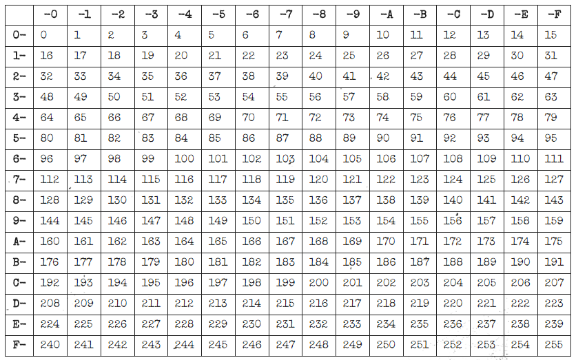

On the Subject of Hex To Decimal
Be happy you are only doing this for one game session. At least you weren't Nintendo in the 1980's figuring out how to program the NES with 0's and 1's.
The main display at the top left displays a random hexadecmal character.
The input display at the top right displays the number the defuser has currently added.
Starting from 0, the defuser must add 100, 10, or 1 to get the desired number.
If the defuser messes up, reset by pressing the "CLR" button.
• To find the desired number, use the table below:
